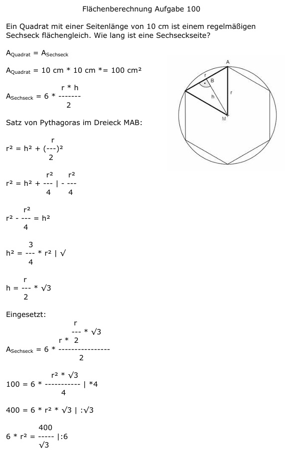

Aufgabe 100 Ein Quadrat mit einer Seitenlänge von 10 cm ist einem regelmäßigen Sechseck flächengleich. Wie lang ist eine Sechseckseite?  AQuadrat = A AQuadrat = 10 cm * 10 cm *= 100 cm2 r * h ASechseck = 6 * ------- 2 Satz von Pythagoras im Dreieck MAB: r r2 = h2 + (---)2 2 r2 r2 r2 = h2 + ---- | - ---- 4 4 r2 r2 - ---- = h2 4 3 h2 = --- * r2 | √ 4 r h = --- * √3 2 Eingesetzt: r --- * √3 r * 2 ASechseck = 6 * ---------------- 2 r2 * √3 100 = 6 * ----------- |*4 4 400 = 6 * r2 * √3 |:√3 400 6 * r2 = ----- |:6 √3 400 r2 = -------- √3 * 6 r2 = 38,5 |√ r = 6,2 cm = Seite des Sechsecks